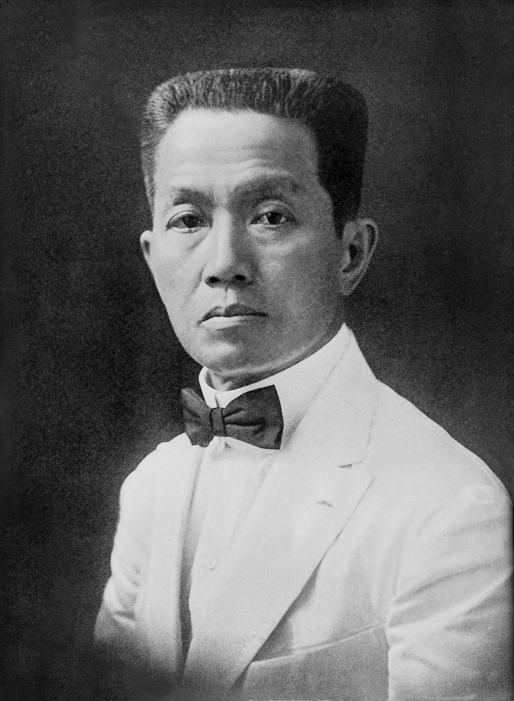
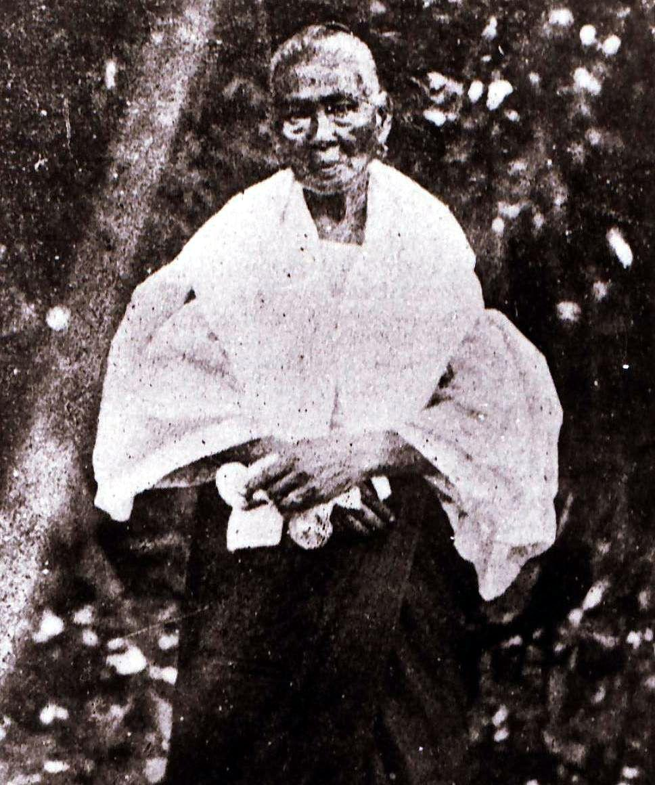

Welcome to Our Website!
Welcome to Group 4's website! Here, we share information about two important Filipino heroes, Emilio Aguinaldo and Melchora Aquino.
Emilio Aguinaldo

Emilio Aguinaldo was a Filipino leader and politician who fought for the independence of the Philippines. He served as the first president of the Philippines.
Emilio Aguinaldo was born on March 22/23, 1869, near Cavite, Luzon, Philippines. He died on February 6, 1964, in Quezon City.
His Contributions
Aguinaldo attended the Colegio de San Juan de Letran but left school early due to a cholera outbreak.
Aguinaldo became involved in the Katipunan and fought against Spain and later against the United States for Philippine independence.
As a key leader in the fight for Philippine independence, Emilio Aguinaldo declared the nation's sovereignty from Spain on June 12, 1898, in Kawit, Cavite.
He later led armed resistance against American rule.
When the Philippines declared itself an independent republic in 1898 and Aguinaldo became its president, a significant milestone was reached in the struggle against colonial rule in Asia.
Emilio Aguinaldo fought for a free and independent Philippines, first against Spain and then against the United States.
Melchora Aquino

Melchora Aquino, also known as Tandang Sora, provided shelter, food, and care to revolutionaries, earning the title "Mother of the Revolution."
Melchora Aquino was born on January 6, 1812. She lived to the age of 107 and passed away on February 19, 1919.
Her Contributions
In her early years, she was known in her village as a medicine woman who helped her neighbors with minor illnesses and injuries.
With a large family to support, she took over the management of the family farm and other business interests entrusted to her.
Aquino became involved with a secret revolutionary society known as Katipunan.
Melchora Aquino sympathized with the rebels and let them use her store to hold meetings and to stock supplies and weapons.
Greatly revered for her courageous participation in the liberation of her country, Melchora Aquino became known as the "Mother of the Philippine Revolution."